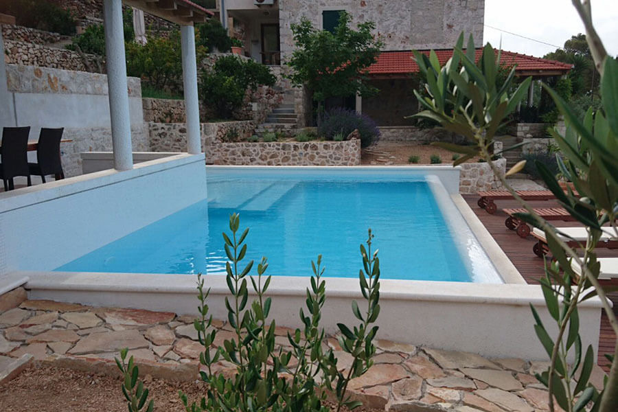
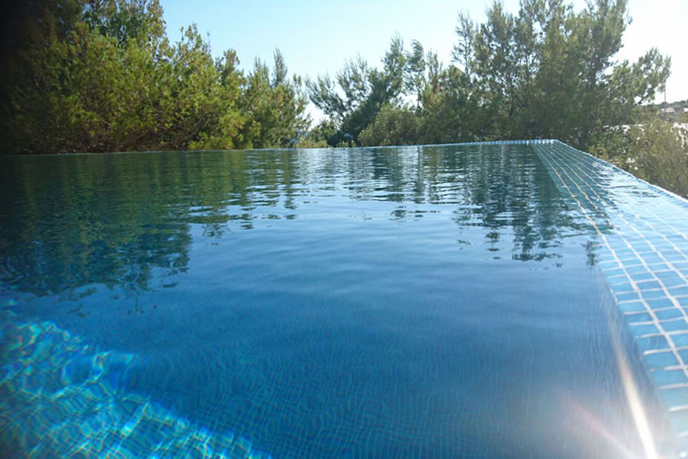
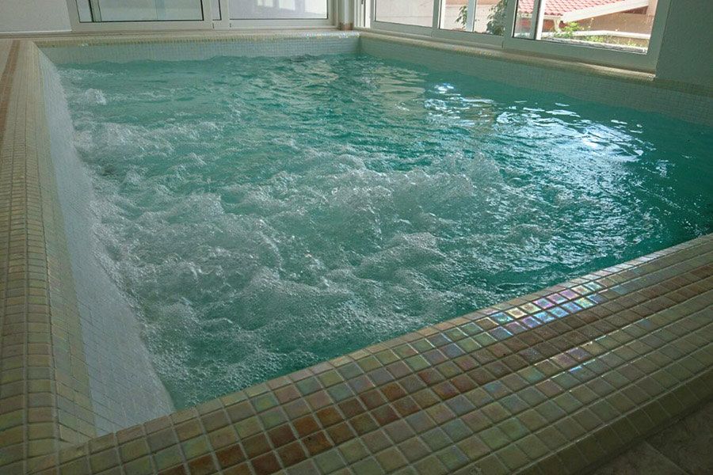
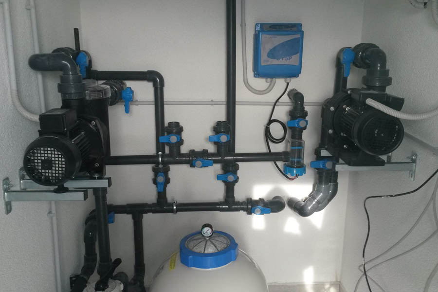
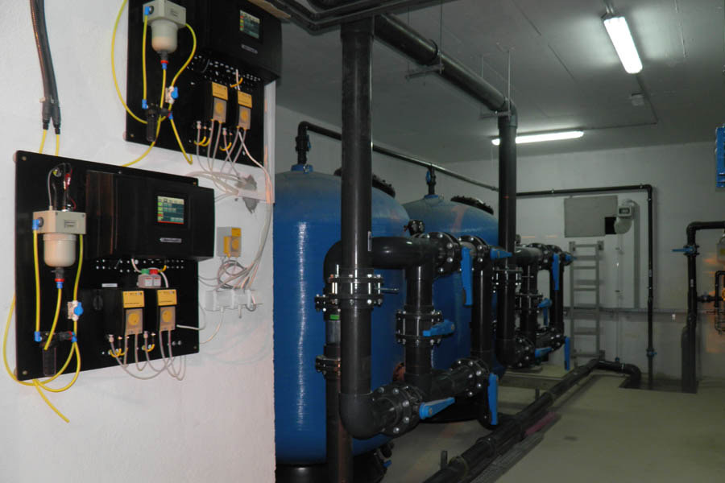
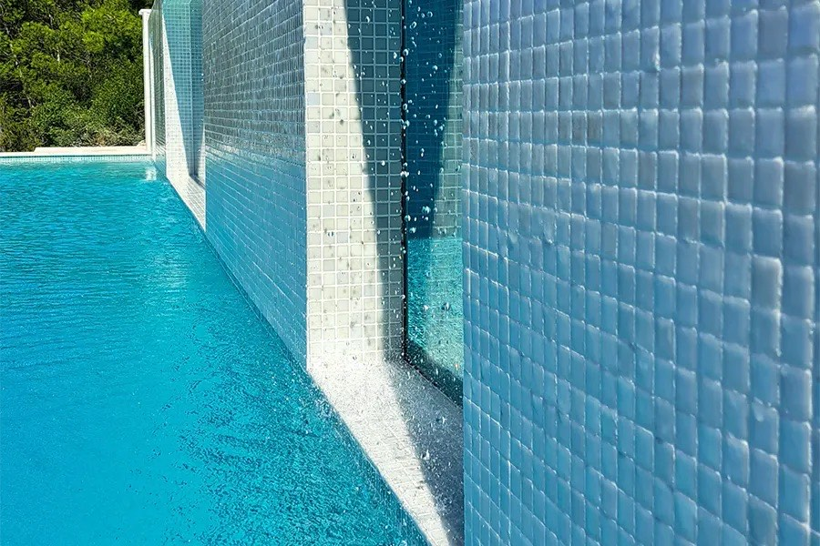
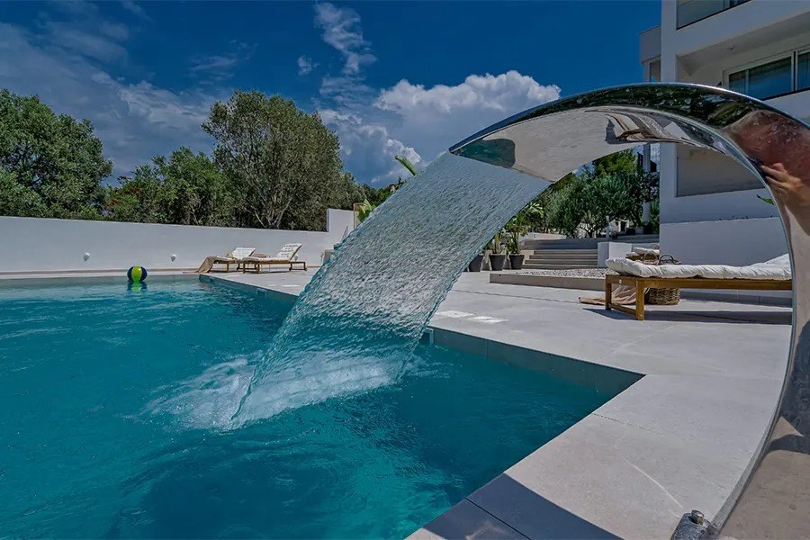
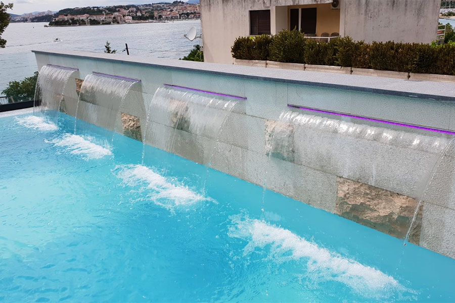
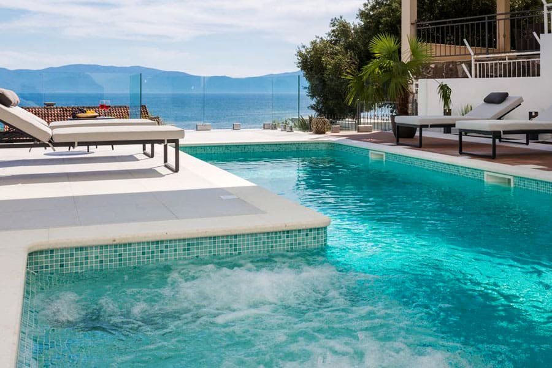

Skimmer
Ključni dio filtracije skimmerskog bazena. Usisava vodu koja prolazi kroz pješčani filter i vraća se kroz povratne mlaznice. Uz njega se ugrađuje nivostat koji automatski nadopunjava vodu.
Kako rade skimmerski, preljevni i masažni bazeni, što ide u strojarnicu i čime bazen možete nadograditi: rasvjetom, hidromasažom, slapom ili grijanjem vode.

A — Skimmerski bazenSkimmerski bazeni koriste se većinom za privatnu upotrebu. Razina vode desetak je centimetara niža od ruba bazena.
U zidove bazena se prije betoniranja školjke postavljaju mlaznice kroz koje se čista voda upumpava u bazen. Na suprotnom zidu ugrađuju se skimmeri koji prihvaćaju površinsku vodu s nečistoćama. Voda preko skimmera i podne rešetke ulazi u filtracijski sustav i nakon fizičkog i kemijskog tretmana vraća se u bazen kroz zidne mlaznice.

B — Preljevni bazenKod preljevnih bazena voda je u razini ruba bazena. To su većinom javni bazeni, ali se zbog kvalitetnije cirkulacije vode za njih odlučuju i mnogi privatni klijenti.
Voda se preko ruba, na jednom dijelu ili po cijelom opsegu, slijeva u preljevni kanal i dalje u kompenzacijski bazen. Odatle je pumpa povlači, filtrira i vraća u bazen kroz podne mlaznice. Filtrirana voda struji od dna prema površini, što je najučinkovitiji način prostrujavanja vode.

C — Masažni bazenZbog nedostatka prostora mnogi se odluče za gradnju malih masažnih bazena. Dodatni efekti, poput hidromasaže, zračne masaže, gejzira i slapova, stvaraju vrhunski doživljaj ugode, a dobro odabrana rasvjeta pojačava vizualni dojam.
Masažni bazeni su uglavnom samostojeći i mogu se ugraditi bilo gdje: u vrt, na terasu ili balkon. Postoje profesionalni masažni bazeni s preljevnim rubom i filtrima, ali je dovoljno i prije gradnje predvidjeti nekoliko hidromlaznica.
Strojarnica ili filtracijska postaja smješta uređaje za filtriranje i tretiranje bazenske vode. Ne mora biti velika, ali mora biti suha i što bliže bazenu.
Pod je preporučljivo obložiti grubim keramičkim pločicama za vanjsku primjenu, u padu prema šahtu potopne pumpe. Manje strojarnice mogu se smjestiti u sklopu betonske školjke ili u zidano-betonskoj izvedbi s hidroizolacijom.



Neke od strojarnica koje su K.G.B. instalacije izvele diljem Hrvatske. Ostavljamo mjesto za opremu koja se može ugraditi i naknadno: grijače vode, izmjenjivače topline, pumpe za protustrujno plivanje i hidromasažu, automatski dozator i potopnu pumpu.
U ponudi imamo pumpe renomiranih proizvođača kao što su Speck, Calpeda, Astral i Seko.
Ključni dio filtracije skimmerskog bazena. Usisava vodu koja prolazi kroz pješčani filter i vraća se kroz povratne mlaznice. Uz njega se ugrađuje nivostat koji automatski nadopunjava vodu.
Pumpa tlači vodu kroz filter, a mlaznice je vraćaju u bazen. Kod skimmerskih bazena ugrađuju se u zid, a kod preljevnih u pod.
Pješčani filter s kvarcnim pijeskom dviju granulacija mehanički odstranjuje nečistoće. Kvaliteta ovisi i o materijalu kućišta: polipropilen, poliester ili nehrđajući čelik.
Pokreću vodu kroz cjevovod, uređaje i bazen, a opremljene su predfilterom. Za hidromasažu i protustrujno plivanje koriste se pumpe od 2,0 kW naviše.
Služe za pražnjenje bazena kad je potrebno, a kod skimmerskih bazena djelomično i kao usis vode.
Pribor za čišćenje i pokrivanje te automatski roboti za čišćenje poda i zidova bazena.

Stakleni mozaikUz instalaciju bazenske opreme izvodimo i hidroizolaciju te oblogu bazenske školjke staklenim mozaikom ili porculanom.
Pri izvođenju koristimo materijale proizvođača Mapei, a bazene oblažemo mozaicima svjetski poznatih proizvođača Ezarri i Mosavit.
Ako želite da bazen bude atraktivniji, u ponudi imamo razne efekte koji boravak u vodi čine još ugodnijim.
Halogeni reflektori, LED rasvjeta i LED u više boja. Gotovo da i nema bazena bez podvodnog reflektora, a noću stvara poseban ugođaj.
Plivanje u mjestu i masaža tijela. Uključuje se pneumatskim prekidačem na maski uređaja, gdje se regulira i količina zraka.
Jedna ili više mlaznica masira pojedine dijelove tijela. Jačina mlaza i količina zraka mogu se regulirati.
Puhalo kroz mlaznicu u podu upuhuje zrak u vodu. Mjehurići stvaraju osjećaj lebdenja i bestežinskog stanja.
Uz rub bazena, tako da voda pada u bazen. Ako je dovoljno visok, masira vrat i ramena.
Inox ljestve s protukliznim gazištima, različitih oblika i dimenzija, te rukohvati uz rub, stubište ili hidromasažu.



Fitnes u bazenu: sprave za vježbanje u vodi poput traka za trčanje i bicikala, zanimljiva dodatna ponuda i za iznajmljivače apartmana.
Bazeni sadrže velike količine vode koju treba zagrijati. Mnogi iznajmljivači odlučuju se za dogrijavanje bazenske vode i tako produžuju predsezonu i posezonu.
Koriste toplinu vanjskog zraka i rade i do −15 °C. Montaža je jednostavna, održavanje minimalno. Veća početna investicija od elektrogrijača isplati se kroz manju potrošnju struje.
Cijevni izmjenjivači uglavnom se koriste na privatnim bazenima, a pločasti na javnim jer imaju veću površinu prijenosa energije.
Otvoreni (apsorberi) su povoljni i jednostavni za ugradnju. Zatvoreni ljeti griju bazen i vodu za kućanstvo, a zimi pomažu u grijanju prostora.
 Hidromasažne kade
Hidromasažne kadeModeli hidromasažnih kada koje imamo u ponudi:
Primjer: model Phoenix (2150 × 1900 × 800 mm) ima 40 masažnih mlaznica, mjesta za 6 osoba i 1150 l vode i Balboa GS100 upravljački sustav. Za podatke o ostalim modelima javite nam se.